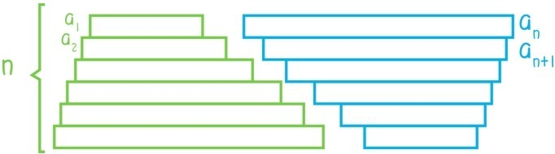

相传，大数学家高斯小时候，他的数学老师曾要求全班同学计算
1+2+3+4+…+99+100
当其他同学还在埋头苦算的时候，高斯已经直接报出答案：5050。高斯的方法是将原先的和式转化为1+100=101，2+99=101，…，49+51=100与50的和式。将高斯的方法拓展，就可以得到等差数列的求和公式。
令{an}是一个公差为d的等差数列，Sn为数列前n项之和。则
所以
如果用图表示上面的求和过程那就是

这种方法和求梯形面积的方法很类似，求和公式与梯形面积公式也非常类似。下一节将进一步阐述求和与求面积的关联。
现在来观察公式
注意这是求和公式，通常理解的求和至少是两个数的求和，但是这个公式对n=1也是成立的，这时公式变成S1=a1。所以对一个数也可以求和，和等于这个数本身。
一个真正的问题来了，当n=0的时候，求和公式是否有意义？这时右边等于0，而左边呢？表示数列的前0项的和？
问题66:0个数求和是否有意义，是否等于0？
我们把这个问题留给读者思考，继续观察这个求和公式
等号右边其实就是一个关于n的二次多项式f(n)，而an其实是一个关于n的一次多项式，而这个求和公式实质上就是
而这个差分公式代表着一种普遍现象：对于任何k次多项式f(n)，f(n)-f(n-1)总是一个(k-1)次多项式。例如
不少读者可能会问为什么会有这种普遍现象，下面这个问题留给读者解答（提示：利用二项式定理）。
问题67：为什么对于任何k次多项式f(n)，f(n)-f(n-1)总是一个关于n的(k-1)次多项式？
如果读者能解答问题67，那是不是可以反过来说明，(k-1)次多项式数列前n项之和都一定是一个关于n的k次多项式？
问题68：为什么(k-1)次多项式数列前n项之和都一定是一个关于n的k次多项式？
这个问题留给读者解答。接下来来看一个非常典型的例子：求平方数列的前n项之和
Sn=12+22+32+…+n2
根据上面的分析，Sn就是一个关于n的3次多项式f(n)=a3n3+a2n2+a1n+a0，通过
很容易可以求出这个多项式是。接下来用另一种方法——数学归纳法来严格证明这个等式
将这个等式看成一个关于正整数n的命题Ωn，将n=1代入等式两边会发现等式成立，所以命题Ω1成立。现在假设对于某个正整数n，命题Ωn成立，则
所以Ωn+1也成立。
已经知道了Ω1成立，且对于每个正整数n，若Ωn成立，则Ωn+1也成立，即Ωn⇒Ωn+1。
由Ω1成立和Ω1⇒Ω2，可以推出Ω2成立；
由Ω2成立和Ω2⇒Ω3，可以推出Ω3成立；
由Ω3成立和Ω3⇒Ω4，可以推出Ω4成立；
……
所以所有Ωn都成立。
归纳法就是针对关于正整数的命题Pn，只要知道P1成立，且Pn⇒Pn+1，就可以推出所有Pn都成立。
接下来，用归纳法证明一个非常有用的不等式
(1+x)n≥1+nx
这里x≥-1，n是正整数。注意，当x≥0时，这个不等式是二项式定理的简单推论。
证明：（归纳法）首先n=1时，这个不等式很明显是成立的。假设对于某个正整数n，(1+x)n≥1+nx，因为1+x≥0，两边同时乘以1+x后，不等式仍然成立，所以
(1+x)n+1≥(1+x)(1+nx)=1+(n+1)x+nx2≥1+(n+1)x
因此不等式对所有正整数n都成立（证毕）。
提问时间
10.2.1 证明：13+23+33+…+n3=。
10.2.2 斐波那契数列{an}是由a1=a2=1和等式an+2=an+1+an（n≥1）定义的，它的前几项是1，1，2，3，5，8，13。证明：
（1）a12+a22+a32+…+an2=anan+1；
（2）an+12-anan+2=(-1)n。
10.2.3 利用等式和归纳法，给出二项式定理的一个新的证明。